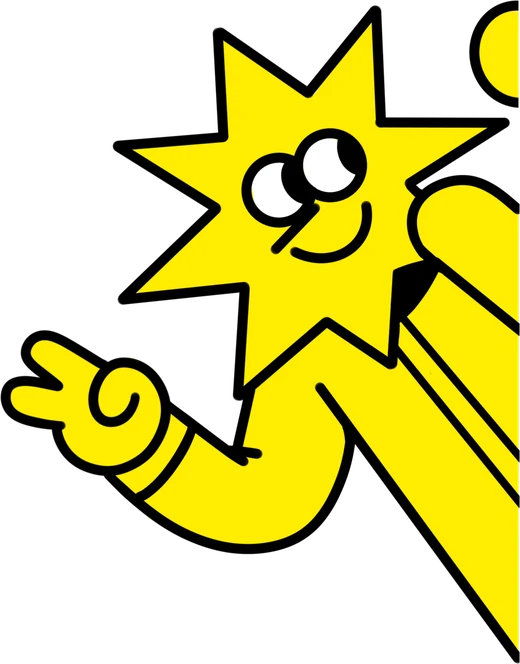
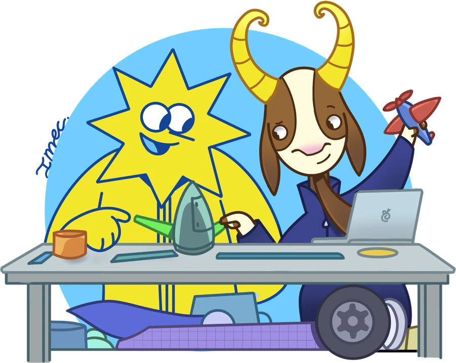

Controla un brazo robótico con inteligencia artificial
Brazo sin conectar

Cargando el modelo de la mano…
–
detectando –
Brazo quieto mientras se carga un diseño
Cámara y proyección
Atajos de teclado: M para cargar un diseño, F para volver al de fábrica y Esc para cancelar.
De la mano al robot
En una fracción de segundo, una red neuronal encuentra la mano en la imagen, una regla geométrica cuenta los dedos y un microcontrolador traduce ese número en el movimiento de cuatro motores. La inteligencia artificial decide qué está viendo. La ingeniería mecánica hace que eso se convierta en movimiento real, con fuerza, precisión y seguridad.

El recorrido de un gesto
Cámara
Toma unas 30 imágenes por segundo. Cada imagen es una cuadrícula de cerca de un millón de puntos de color.
Red neuronal
MediaPipe, un modelo entrenado con miles de fotos de manos, ubica 21 puntos sobre cada mano: la muñeca, los nudillos y las puntas de los dedos.
Regla de conteo
Un dedo está estirado si su punta queda más lejos de la muñeca que su nudillo. El pulgar se mide aparte, contra la base del meñique. Un gesto cuenta cuando se repite cinco imágenes seguidas.
Diseño del equipo
El número de dedos se traduce en una orden según la tabla que eligió cada equipo. Dos manos a la vista son siempre una pausa.
Arduino
Recibe una letra por el cable USB y además una señal de vida cada décima de segundo. Si esa señal deja de llegar, detiene el brazo.
Servos y mecanismo
Cuatro servomotores mueven la base, la altura, el alcance y la garra. El mecanismo de barras convierte esos giros en el movimiento del brazo.
Lo mecánico
Un mecanismo de paralelogramo
El brazo EEZYbotARM une sus barras formando paralelogramos. Así la garra conserva su orientación mientras el brazo sube, baja o se estira, sin un motor dedicado a la muñeca. Es el mismo principio de las lámparas de escritorio articuladas y de muchos brazos de paletizado industrial.
Servomotores
Un servo es un motor con una caja de engranajes y un sensor de posición. El Arduino le indica el ángulo con un pulso eléctrico de entre 0,5 y 2,4 milisegundos que se repite 50 veces por segundo. El servo empuja con una fuerza proporcional a la distancia entre donde está y donde se le pidió estar.
Par contra la gravedad
Subir el brazo exige mucho más par que girar la base, porque el motor de la altura levanta todo el peso del brazo con un brazo de palanca largo. Por eso el programa manda la altura directo al extremo, para que el servo empuje con toda su fuerza desde el primer instante, y la baja en pasos cortos para no dejar caer el objeto.
Energía y seguridad
Cada servo puede pedir más de un amperio al arrancar, cinco veces lo que entrega el Arduino. Por eso los motores se alimentan de una fuente aparte. Y si se corta la comunicación, por un cable que se suelta o una pestaña que se cierra, el Arduino detiene el brazo en menos de medio segundo.
Dónde se usa
Teleoperación. Brazos que se manejan a distancia para desactivar explosivos, trabajar dentro de reactores o reparar estructuras bajo el agua.
Prótesis y exoesqueletos. Manos y piernas robóticas que interpretan señales del cuerpo para moverse como su usuario quiere.
Cirugía asistida. El cirujano mueve unos controles y el robot reproduce el movimiento a escala, sin temblor.
Robots colaborativos. En las fábricas, robots que trabajan junto a las personas y reaccionan a sus gestos y su presencia.
Rehabilitación. Equipos que acompañan los ejercicios de un paciente y miden su avance.
Ingeniería mecánica e inteligencia artificial
La inteligencia artificial percibe y decide. Para que esa decisión se convierta en algo útil hacen falta mecanismos que se muevan como se necesita, materiales que aguanten, motores con la fuerza justa, energía suficiente y un sistema de control que lo haga de forma segura. Ese es el trabajo de la ingeniería mecánica, y cada vez más se hace junto con modelos que aprenden de datos.
Mientras esta pestaña está abierta, los gestos no mueven el brazo. Se mueve solo con los controles de aquí.
Conexión
Conecte el Arduino por USB y presione «Conectar brazo».
Preparar la placa
Carga en el Arduino el programa del taller. Hace falta una vez por placa, o cuando la placa trae otro programa. Sirve para Arduino Uno y Nano, originales o clones. Con un Uno tarda unos 6 segundos y con un Nano de bootloader viejo puede tardar más. Durante ese tiempo no hay que desconectar el cable.
Control manual
Cada botón está donde se mueve esa parte del brazo. Los de girar funcionan mientras se mantengan presionados.
Izquierda y derecha se ven desde atrás del brazo, mirando hacia donde apunta la garra. Si el brazo gira al revés, intercambie los dos topes de la base en «Límites y posiciones».
Pines de los servos
El pin del Arduino al que va el cable de señal de cada servo. «Mover un poco» sacude ese servo unos grados para reconocer cuál es.
Límites y posiciones
Cada cambio lleva el servo a ese ángulo para que se vea dónde queda. Conviene avanzar de a 5 grados y detenerse en cuanto el servo zumbe o llegue al tope.
Si se manda un servo más allá del tope mecánico de su pieza, el motor sigue empujando contra el tope sin poder llegar. Consume mucha corriente, se calienta en pocos minutos y puede dañar sus engranajes. Se reconoce porque zumba quieto. En la garra pasa al pedirle que cierre más de lo que la canasta permite. Para corregirlo, devuelva el valor 5 grados hacia adentro hasta que el zumbido pare y guarde.
Hay cambios sin guardar. Si la placa se desconecta, se pierden.
Consola
Todo lo que la página le manda a la placa y lo que la placa responde. Los latidos, un punto cada décima de segundo, no se muestran.
Comandos que entiende la placa
Se escribe
Qué hace
i / d
Gira la base a la izquierda o a la derecha mientras siga llegando señal. Cualquier otra letra detiene el giro.
s / b
Lleva el brazo arriba de un golpe, o abajo en pasos cortos. No hay alturas intermedias.
o / c
Abre la garra de un golpe, o la cierra en pasos cortos.
p
Pausa. Detiene el giro. La altura y la garra se quedan como estén.
.
Latido. Si pasan 400 ms sin recibir nada, la placa detiene el brazo.
1 a 8
Calibración. Mueven base, altura, alcance o garra de a 5 grados. ? muestra los ángulos.
#info
Responde IMEC-BRAZO v1 si la placa tiene el programa del taller.
#config
Muestra los pines y los ángulos guardados.
#set clave valor
Cambia un valor, por ejemplo #set pin_garra 5.
#mover servo ángulo
Lleva un servo a un ángulo, por ejemplo #mover base 90.
#guardar / #fabrica
Guarda la configuración en la placa, o vuelve a la de fábrica.
Qué es
Una actividad de una hora para estudiantes de colegio. En equipos, deciden qué orden del brazo robótico va con cada gesto de la mano, de 0 a 5 dedos, y después intentan llevar un objeto de un punto a otro usando solo su diseño. La cámara del portátil ve la mano, un modelo de inteligencia artificial la reconoce y un Arduino mueve el brazo.
Todo corre en el navegador. No hay que instalar nada en el computador.
Materiales
Un portátil Windows o Mac con cámara, o con una cámara web.
Google Chrome o Microsoft Edge. Safari y Firefox muestran la detección de la mano, pero no pueden comunicarse con el Arduino.
El brazo EEZYbotARM armado, con sus cuatro servos MG995 o similares.
Un Arduino Uno o Nano con un Sensor Shield V5.
Una fuente de 5 a 6 V que entregue al menos 3 A, con un adaptador de plug a bornera.
Un cable USB de datos para el Arduino. Hay cables que solo cargan y no transmiten datos.
Un objeto liviano que quepa dentro de la garra cerrada, y dos puntos marcados en la mesa, A y B, a la misma distancia de la base del brazo.
Conexión eléctrica
El Arduino no se conecta a los servos con cables sueltos. Encima va un Sensor Shield V5, una tarjeta que se encaja sobre los pines del Arduino como una tapa. Por cada pin digital trae una fila de tres pines, marcados G, V y S, que coinciden con el conector de tres cables de un servo. También trae una bornera de tornillos para la alimentación de los motores.
Tres circuitos separados. El USB lleva los datos y alimenta el Arduino. La fuente alimenta solo los motores, a través de la bornera del shield. Cada servo recibe su señal por la columna de su pin, con el hilo marrón en G, el rojo en V y el naranja en S. El puente SEL va retirado para que la fuente no quede conectada al Arduino.
Hay tres detalles que deciden si funciona o no.
Los servos se alimentan de la fuente, nunca del USB. Un servo MG995 puede pedir más de 1 A al arrancar y el Arduino entrega unos 0,2 A. Alimentados desde el USB, la placa se reinicia apenas el brazo se mueve.
El puente SEL del shield se quita antes de conectar la fuente. Ese puente une la alimentación de los servos con la del Arduino. Si se deja puesto, la fuente queda conectada directo al Arduino y lo puede dañar. Con el puente retirado, el Arduino se alimenta del USB, los servos de la fuente, y el shield une las tierras.
La polaridad de la fuente. En casi todos los adaptadores de pared el positivo es el centro del plug. La etiqueta del adaptador lo indica con un círculo y un punto en el centro marcado con +.
Los pines del diagrama son los de fábrica. Si el brazo se armó con otros, no hay que mover cables: se cambian en la pestaña Brazo, en «Pines de los servos».
Placas compatibles
Sirven las placas con el microcontrolador ATmega328P, originales o clones de cualquier marca, como Elegoo:
Arduino Uno R3 y sus clones, con chip USB 16U2, CH340 o CH9102.
Arduino Nano y sus clones, con el bootloader nuevo o con el viejo. La página prueba los dos.
No sirven Arduino Uno R4, Nano Every, Mega 2560, Leonardo, ni placas ESP32 o LGT8F328P, porque usan otro microcontrolador. Si se conecta una de ellas, la página avisa que no es compatible.
Los clones con chip CH340 necesitan un controlador en el computador. Windows 10 y 11 lo instalan solos la primera vez que se conecta la placa con internet.
Antes de la primera sesión
Abra la página en Chrome o Edge. Cuando el navegador pregunte por la cámara, elija «Permitir».
Conecte el Arduino por USB y encienda la fuente de los servos.
Presione «Conectar brazo», elija la placa en la lista y presione «Conectar». La placa se reinicia al conectarse y responde en unos 3 segundos.
Si aparece «La placa no tiene el programa del taller», vaya a la pestaña Brazo y presione «Preparar la placa».
En la pestaña Brazo, presione «Mover un poco» en cada servo y confirme que se mueve el que corresponde. Si se mueve otro, elija el pin correcto. Si ese pin lo tenía otro servo, los dos se intercambian.
Revise los límites de cada servo con los botones de 5 en 5 grados y presione «Guardar en la placa». La placa conserva esos valores aunque se desconecte.
Pruebe los seis gestos en la pestaña Actividad.
Después de la primera visita, la página queda guardada en el navegador y funciona sin internet.
La actividad
El reto es llevar un objeto del punto A al punto B moviendo el brazo solo con gestos. Los grupos trabajan en equipos de 4 o 5. Dentro de cada equipo los roles se reparten solos: alguien hace los gestos, alguien mira el brazo y corrige, alguien lleva el tiempo. Conviene que roten entre intentos.
La cámara apunta a las manos de quien hace los gestos, no al brazo. Esa persona queda de espaldas o de lado al robot y depende de lo que le diga su equipo, como en una teleoperación real.
La pantalla no muestra qué hace cada gesto. El equipo tiene que recordar el diseño que eligió, y equivocarse de dirección o confundir dos gestos es parte del reto. Planear un diseño fácil de recordar es parte de la estrategia.
Minuto
Qué pasa
0 a 10
En la pestaña Actividad se proyecta la cámara con los 21 puntos sobre la mano de un voluntario. Luego, en la pestaña Cómo funciona, se explica el recorrido de un gesto hasta el robot. Se presenta el reto.
10 a 20
Los equipos se forman y deciden qué orden va con cada gesto, sin tocar el robot.
20 a 50
Turnos de unos 5 minutos por equipo, con un reintento. Antes del reintento cada equipo puede cambiar su diseño. Mientras esperan, los demás equipos observan y anticipan qué le va a pasar al que está jugando.
50 a 60
Cierre con los diseños que funcionaron, los que no y por qué. La lista de diseños usados sirve para este momento.
Como apoyo opcional hay un formulario imprimible para que cada equipo anote su diseño. La actividad funciona igual sin él.
Cómo se hacen los gestos
El sistema cuenta cuántos dedos hay levantados, de 0 a 5, sin importar cuáles. Funciona con el dorso o con la palma hacia la cámara. Dos indicaciones mejoran mucho la detección:
La mano completa dentro de la imagen, sin dedos cortados por el borde.
Para el 5, la mano bien abierta, con el pulgar separado de los demás dedos. Con la mano abierta pero relajada, el pulgar queda pegado y el sistema puede contar 4.
Un gesto cuenta cuando se sostiene cinco imágenes seguidas, poco menos de un quinto de segundo. Mostrar las dos manos es PAUSA y detiene el brazo, sea cual sea el diseño del equipo. Si la mano sale de la imagen, el brazo también se queda quieto.
Girar a la izquierda o a la derecha dura mientras se sostenga el gesto. Subir, bajar, abrir y cerrar van al extremo de una vez y ahí se quedan, así que sostener el gesto no hace más.
Cargar el diseño de cada equipo
Cada orden tiene una letra: c cerrar garra, o abrir garra, i girar a la izquierda, d girar a la derecha, s subir y b bajar. El diseño de un equipo son seis letras, una por gesto del 0 al 5.
Presione la tecla M, o haga clic en la primera casilla de «Diseño del equipo». Mientras se escribe, el brazo se queda quieto.
Escriba el nombre del equipo y las seis letras, y presione Enter. Las casillas se ocultan apenas se aplica el diseño.
Para revisar el diseño cargado sin que lo vea todo el salón, use «Ver el diseño cargado»: se muestra unos segundos y se vuelve a ocultar.
La página no acepta letras repetidas ni menos de seis. Si un diseño deja el brazo imposible de manejar, la tecla F o «Volver al de fábrica» recuperan el diseño conocido. Al final, «Descargar los diseños usados» entrega la lista de diseños de cada equipo con su hora.
Solución de problemas
No se ve la cámara
Haga clic en el ícono de la cámara a la derecha de la barra de direcciones y elija «Permitir». Si ya estaba permitido, el bloqueo viene del sistema operativo.
En Mac, abra Ajustes del Sistema › Privacidad y seguridad › Cámara, active Chrome o Edge y vuelva a abrir el navegador.
En Windows, abra Configuración › Privacidad y seguridad › Cámara y active «Permitir que las aplicaciones de escritorio accedan a la cámara».
Si la página dice que la cámara está ocupada, cierre Zoom, Teams, Meet u otra pestaña que la esté usando.
La detección no arranca y la página habla de la aceleración gráfica
La detección de la mano usa la tarjeta gráfica a través del navegador. En Chrome escriba chrome://settings/system en la barra de direcciones, y en Edge edge://settings/system. Active «Usar aceleración de gráficos cuando esté disponible» y reinicie el navegador.
La placa no aparece en la lista al conectar
Pruebe otro cable USB, porque hay cables que solo cargan. Si la placa es un clon con chip CH340 y el computador es Windows, espere un minuto con internet para que se instale el controlador. Si sigue sin aparecer, use «No aparece mi placa en la lista», en la pestaña Brazo, que muestra todos los puertos.
«El puerto está ocupado»
Otro programa tiene la placa abierta. Cierre el Arduino IDE, su Monitor Serie o cualquier otra pestaña con esta página, y vuelva a conectar.
«El brazo se está usando en otra pestaña»
La página está abierta dos veces y solo una puede mandar órdenes al brazo, para que dos programas no lo controlen a la vez. Cierre la otra.
El brazo tiembla, se mueve solo o el Arduino se reinicia
Casi siempre es la alimentación. Revise que los servos estén conectados a la fuente externa, que la fuente entregue al menos 3 A y que el puente SEL del shield esté retirado.
Un servo zumba quieto o se calienta
Está empujando contra un tope mecánico sin poder llegar al ángulo que se le pidió. En la pestaña Brazo, lleve ese límite 5 grados hacia adentro hasta que el zumbido pare, y guarde.
Al brazo le falta fuerza para subir
Revise primero la mecánica. Con las tuercas de las articulaciones demasiado apretadas, la fricción supera el par del servo. Con el servo de altura soltado de su pieza, el brazo debería subir empujándolo con dos dedos. Si no sube así, afloje las tuercas.
La detección falla durante la actividad
Revise la luz, que no haya una ventana brillante detrás de la mano, y repita las indicaciones de los gestos. Si no se recupera, el control manual de la pestaña Brazo permite terminar el turno.